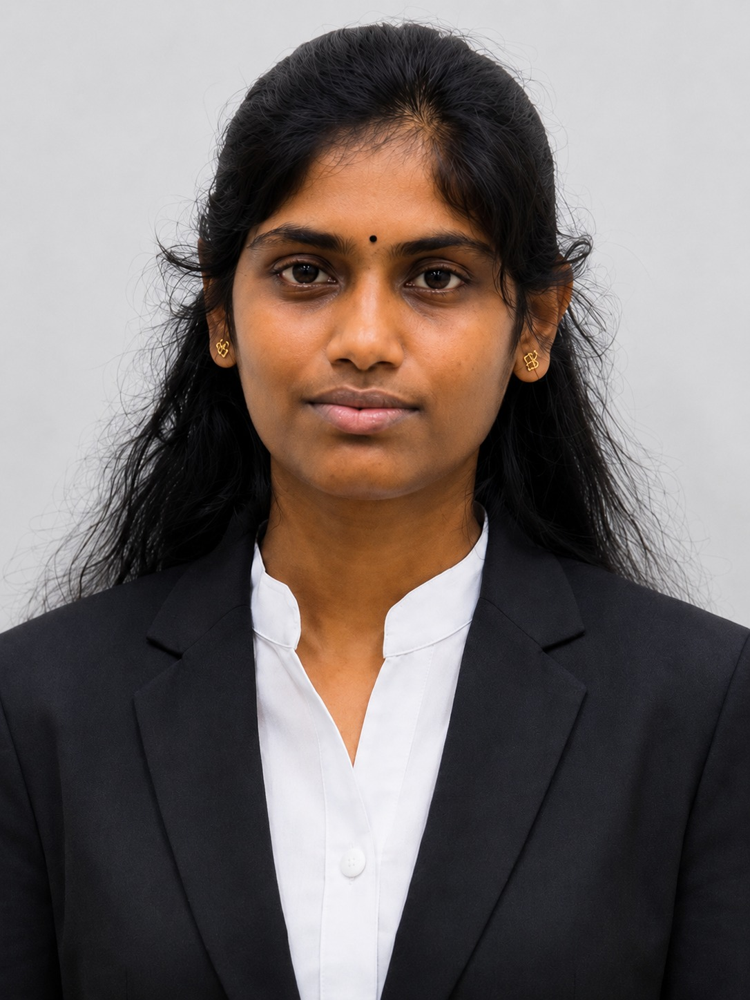

A motivated undergraduate at the University of Sri Jayewardenepura with an interest in Business Analysis, Data Analytics, IT Support and Software Development.

A concise profile based on the information in the CV.
VINITHTHA is a motivated and enthusiastic BSc Honours in Business Information System undergraduate at the University of Sri Jayewardenepura. She has a strong interest in technology and business-focused problem solving, with skills across analytics, programming, databases and enterprise systems. She is seeking opportunities to apply her technical, analytical, problem-solving and communication skills while gaining practical industry experience. She values continuous learning, teamwork and professional development.
Technical, analytical and professional capabilities.
Academic projects highlighted from the CV.
"Boarding Gigs" — an academic project focused on managing boarding-related information through a web-based system.
An academic project implementing an online bus booking workflow using Python and MySQL.
Academic background and involvement.
Department of Information Technology, Faculty of Management Studies & Commerce, University of Sri Jayewardenepura. Present GPA: 2.81.
Accounting, Economics, Business Studies and General Test. Results: A, B, B and Pass.
Active member of S@IT, Thiruvalluvar Students' Association, Adventure Club and ISACA – USJP.
Introduction to IoT and Digital Transformation; Cybersecurity Fundamentals; Microsoft Package.
Open to internship opportunities in Business Analysis, Data Analytics, Software Development, IT Support and related areas.